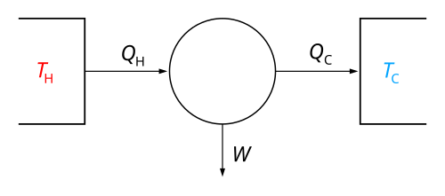

Termodinamiğin Üçüncü Yasası

Termodinamiğin üçüncü yasası, mutlak sıfır sıcaklığına yaklaşırken, bir sistemin entropisinin sıfıra yaklaştığını belirtir. Bu yasa, mutlak sıfırda bir kristal yapısının tek bir düzenli konfigürasyona sahip olduğunu ve bu nedenle entropisinin sıfır olduğunu ifade eder.
Entropi değişimi
δS = S - S0 = kblnΩ
δS = δQ/T
Mutlak Sıfırda Entropi
S = 0